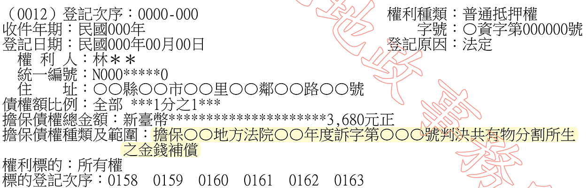

主題精選：共有人¶
共收錄 25 篇文章。
1. 共有人占用共有土地之默示分管關係¶
發布日期: 2025-03-25
內文¶
今日專欄舉一篇有關共有人占用共有土地之默示分管關係案例供參
甲有一筆位於某市的A地，其死亡後由13位繼承人共同繼承該地，且未辦理繼承登記。民國74年時，其中一位繼承人乙於該地上興建一B建物並居住，其他繼承人皆有到場祝賀遷居，後續亦由甲繳納該地之地價稅。民國100年時，其他共有之繼承人訴請拆屋還地，試問甲得否主張其他共有人長期不反對而成立「默示分管」，故具有合法權源？
• 一、默示分管之定義
所謂默示分管，係指依共有人之舉動或其他情事，足以間接推知其效果意思者而言，必共有人間實際上劃定使用範圍，對各自占有管領之部分，互相容忍，對於他共有人使用、收益，各自占有之土地，未予干涉，已歷有年所，始得認有默示分管契約之存在（最高法院29年上字第762號判例、80年度臺上字第1470號判決、83年度臺上字第237號判決意旨參照）
• 二、不得主張成立默示分管之理由
-
縱B屋於74年落成時，共有人均前往祝賀，惟僅是單純沈默而未為制止，不生任何法律效果，亦非默許同意繼續使用。
-
繳交地價稅，僅能說明其處理此部分事務，亦難作為其他共有人默許甲有單獨使用A地之權利。
-
甲雖請求傳喚A地其他共有人全部到庭，以證共有人有默示合意分管事實，然A地之共有人間並無默示分管協議存在等情，已如前述，無庸再為傳訊證人必要，況部分甫因繼承登記才成為共有人，非B屋興建時之共有人，房屋興建時年紀尚輕，實難認為其知悉A地當時是否經全體共有人為默示分管協議。
綜上，甲並不能舉證證明A地有分管契約存在，自難徒憑A地共有人長期以來未向甲行使權利或經過時間之長短，遽以推論共有人間有明示或默示分管契約存在。
提醒： 雖共有人可就長時間占用土地提出已有默示分管之適用，惟仍需有一定之事實證據得以佐證較為妥適。
資料來源：臺灣高等法院102年度重上字第543號民事判決
注：本文圖片存放於 ./images/ 目錄下
2. 個人墓地出售是否得主張優先購買之疑義¶
發布日期: 2025-03-18
內文¶
本週專欄為土地法第34條之1第4項有關共有人出賣應有部分之特殊概念－個人墓地出售是否得主張優先購買。可參臺灣高等法院暨所屬法院110年法律座談會民事類提案第7號內容：
甲以經營殯葬事務為業，將其所有之A土地（土地謄本所載使用地類別為殯葬用地）規劃為編號1至26,000位之個人墓園用地擬以出售。嗣乙向甲購買編號50之個人墓園用地，甲則移轉登記A土地之應有部分兩萬六千分之一予乙，又丙為乙之債權人，於清償期屆至後，乙無力還款，丙遂持執行名義向法院聲請強制執行上開乙於A土地之應有部分，經拍定後A土地之其他個人墓園用地所有人（高達千人）得否以共有人之身分行使優先承買權？
討論意見：甲說：肯定說。 按土地法第34條之1第4項規定：「共有人出賣其應有部分時，他共有人得以同一價格共同或單獨優先承購。」其立法意旨無非為第三人買受共有人之應有部分時，承認其他共有人享有優先承購權，簡化共有關係（最高法院 72 年台抗字第94號判例意旨參照）。又共有物分管之約定，不以訂立書面為要件，倘共有人間實際上劃定使用範圍，對各自占有管領之部分，長年互相容忍，對於他共有人使用、收益，各自占有之土地，未予干涉，即非不得認有默示分管契約之存在（最高法院83年度台上字第1377號判決意旨參照）。復共有之土地縱已達成分管之約定，於該分管之共有人出售該土地應有部分，亦無排斥賦予共有人優先承買土地之權利，若認土地共有人間業已成立分管契約，而於他共有人出賣其應有部分時，其他共有人即不得主張共有人之優先承買權，顯失簡化共有關係之目的，無助於促進土地之利用（臺灣高等法院100年度上字第 1189 號判決意旨參照）。查題示A土地之共有人得於其使用個人墓園之範圍內排除他人干涉，並對各自占用管領之部分，長年互相容忍，堪認共有人間係成立默示分管契約。準此，揆諸前開實務見解，縱認A土地已達成分管之約定，仍不得限制共有人優先承買之權利，執行法院拍賣A土地之應有部分，仍應通知其他 A土地共有人行使優先承買權。
乙說：否定說（最終採此說）。 按土地法第34條之1第4項優先承購權之立法目的，固在減少共有人人數，簡化土地之利用關係，並可解決共有不動產之糾紛，促進土地利用，便利地籍管理及稅捐課徵等，惟本件殯葬經營業者係將殯葬用地劃分成特定占用位置的個人墓園，再以應有部分的方式出賣，其目的無非係欲使多數買受人得以利用，故非有賦予其他共有人優先承買權以簡化土地關係之必要，且若維持共有關係，亦符合當初規劃及實際利用狀態，對於共有物之管理、收益並無妨礙。再事實上於此類情形，共有人之人數動輒數千人，不但送達不易，耗費郵資過鉅，況該殯葬用地之個人墓園倘已使用，其餘共有人往往缺乏應買意願，徒為增加國家財政負擔並延長執行時程，對於債權人及債務人均有所不利。
初步研討結果：採乙說。 審查意見：採乙說。 研討結果： （一）乙說理由倒數第6行末「況該殯葬用地之個人墓園倘已使用，其餘共有人往往缺乏應買意願，」等字刪除。 （二）照修正後之乙說通過。
提醒： 雖法律座談會並不具約束法院判決效力，但可供作參考。其結論即這種個人墓地出售土地應有部分無優先購買權適用，理由有三：
-
目的面：無簡化消滅共有關係之必要。
-
權益面：維持共有關係，並不妨礙共有物之使用管理。
-
執行面：此情形如需優先購買權通知，徒增時間與金錢，反而影響相關權益。
資料來源：臺灣高等法院暨所屬法院110年法律座談會民事類提案第7號
注：本文圖片存放於 ./images/ 目錄下
3. 共有人占用共有土地之爭議¶
發布日期: 2025-03-04
內文¶
甲主張其於所有之A地上建造B屋（未登記建物）使用，迄今逾70年，A地共有人乙、丙、丁從未異議，顯存默示分管契約。況於A地上興建B屋，亦已時效取得地上權，是甲並非無權占有，其他共有人自不得請求拆屋還地、給付損害賠償。是否有理由？
-
請求權基礎（訴之標的） 各共有人得按其應有部分，對於共有物之全部，有使用收益之權，民法第818 條定有明文，係指各共有人得就共有物全部，於無害他共有人之權利限度內，可按其應有部分行使用益而言。是共有人對共有物之特定部分占有使用收益，仍須徵得他共有人全體之同意，非謂共有人得對共有物之任何一部或全部有自由使用、收益之權利。如共有人不顧他共有人之利益，而就共有物之一部或全部任意占有收益，即屬侵害共有人之權利，共有人除得依同法第767條第1項前段、第821條規定，請求除去其妨害及向全體共有人返還共有物外，並得依侵權行為法律關係，請求該無權占有之人按共有人就共有物之應有部分比例，賠償共有人所受損害。
-
默示分管及時效取得地上權之爭議 (1)證人審理時，並未證述共有人甲建造B屋時，業經A地其他共有人同意等情。 (2)A地共有人乙、丙、丁對甲占有A地未為爭執反對，其原因多端，不得僅憑甲長期公然繼續占有A地，逕謂其他共有人已同意或默示同意其占有。 (3)甲既謂其基於分管契約或默示分管契約之意思而占有A地，顯然欠缺行使地上權之主觀意思，況甲縱經地上權取得時效完成，亦僅得請求登記為地上權人而已，在未登記為地上權人前，不得本於地上權關係否認非無權占有。
-
判決結果 甲為B屋之事實上處分權人，其並無基於時效取得地上權而占有A地之主觀意思，無請求登記為地上權人之權利，且未能證明A地他共有人全體同意將B屋所在之A地特定部分交甲占有使用。是乙、丙、丁依上開規定，請求甲拆屋還地，並按乙、丙、丁各就A地所持應有部分比例，賠償乙、丙、丁所受損害，核屬權利之正當行使……。
資料來源：最高法院109年度台上字第2037號民事判決（本案已確定）
注：本文圖片存放於 ./images/ 目錄下
4. 判決共有物分割之法定抵押權登記¶
發布日期: 2024-12-17
內文¶
• 一、意義
根據民法第824條，共有物之分割，依共有人協議之方法行之。分割之方法不能協議決定，或於協議決定後因消滅時效完成經共有人拒絕履行者，法院得因任何共有人之請求，命以原物分配於各共有人。但各共有人均受原物之分配顯有困難者，得將原物分配於部分共有人。倘若以原物為分配時，如共有人中有未受分配，或不能按其應有部分受分配者，得以金錢補償之。此為「補償分割」之方式。
惟同法第824條之1第4項則為免補償義務人不給錢，爰規定如為不動產分割者，應受補償之共有人，就其補償金額，對於補償義務人所分得之不動產，有抵押權。繼按土地登記規則第100條之1亦規定，依民法第824條第3項規定申請共有物分割登記時，共有人中有應受金錢補償者，申請人應就其補償金額，對於補償義務人所分得之土地，同時為應受補償之共有人申請抵押權登記。但申請人提出應受補償之共有人已受領或為其提存之證明文件者，不在此限。
• 二、申請方式
• (一) 根據土地登記規則第27條第16款，依民法第824條之1第4項規定抵押權之登記為「單獨申請」，其登記原因為「法定」。
• (二) 此法定抵押權登記需與判決共有物分割登記連件申請。
• (三) 應受補償人(即法定抵押權人)為未會同申請登記之共有人，其未繳之登記規費，得於其抵押權之其他登記事項欄註記「未會同申請，欠繳登記費○○○及書狀費，繳清後發狀」。
• (四) 申請文件：
-
土地登記申請書
-
法院判決共有物分割法定抵押權登記清冊
-
法院判決共有物分割確定證明（如法院對共有物分割裁判確定之判決書）
-
申請人身分證明
-
土地增值稅繳（免）稅證明
-
契稅繳（免）稅證明
-
其他依法律規定應提出之證明文件
• 三、登簿範例
[圖片1]
文章圖片¶

注：本文圖片存放於 ./images/ 目錄下
5. 土地法第34條之1於公同共有準用之¶
發布日期: 2024-11-14
內文¶
公同共有不動產得準用土地法第34條之1第1項（多數決）及第4項（優先購買權）。茲說明如下：
• (一) 各公同共有人不得單獨出賣其潛在應有部分。惟部分公同共有人得依土地法第34條之1第1項規定出賣公同共有土地或建物全部。
• (二) 共有人數及應有部分之計算，於公同共有土地或建物者，指共有人數及其潛在應有部分合計均過半數。但潛在應有部分合計逾三分之二者，其共有人數不予計算（執§7 II）。
• (三) 他公同共有人得就該公同共有土地或建物主張優先購買權。如有數人主張時，其優先購買權之範圍應按各主張優先購買權人之潛在應有部分比例計算之（執§13⑩）。
• (四) 民法第830條第1項規定，公同共有之關係，因公同共有物之讓與而消滅。準此，數人主張優先購買後，該土地或建物之產權由公同共有關係轉變為分別共有關係。
例如：甲、乙、丙、丁、戊五人因繼承而公同共有一筆土地，應繼分各五分之一。甲、乙、丙三人依土地法第34條之1第1項將該筆土地出賣於庚，不同意共有人丁、戊二人主張優先購買權。優先購買後，該筆土地產權為丁、戊二人共有，應有部分各二分之一。
【附註】 執：土地法第三十四條之一執行要點
注：本文圖片存放於 ./images/ 目錄下
6. 多數決創設地上權人、典權人後他共有人仍有優先購買權之意涵¶
發布日期: 2024-10-15
內文¶
• (一) 土地法第34條之1與第104條規定
-
根據土地法第三十四條之一執行要點第12點第1項：「部分共有人依本法條第一項規定出賣共有土地或建物時，他共有人得以出賣之同一條件共同或單獨優先購買。」亦即多數共有人利用多數決出賣整筆共有不動產時，為保障少數人權益，仍給予其機會進行優先購買。
-
另外，按土地法第104條規定：「基地出賣時，地上權人、典權人或承租人有依同樣條件優先購買之權。房屋出賣時，基地所有權人有依同樣條件優先購買之權。其順序以登記之先後定之 (第一項)。前項優先購買權人，於接到出賣通知後十日內不表示者，其優先權視為放棄。出賣人未通知優先購買權人而與第三人訂立買賣契約者，其契約不得對抗優先購買權人 (第二項)。」
• (二) 優先購買權競合之處理原則
-
依照學說看法：物權性質優先購買權優先於債權性質優先購買權。
-
依照執行要點第13點第6款，土地法第34條之1之優先購買權與土地法第104條之優先購買權競合時，應優先適用土地法第104條。
• (三) 多數決創設地上權人、典權人後他共有人仍有優先購買權之意涵
-
執行要點第12點第4項：「部分共有人依本法條第一項規定設定地上權或典權後出賣土地，他共有人仍有第一項優先購買權之適用。」
-
修法理由：「本法條之立法意旨並非以損害少數共有人權益為目的，如先依本法條規定辦理土地之地上權或典權設定，部分共有人再依本法條第一項規定出售該共有土地時，考量該地上權人或典權人已取得之權利仍存在於該土地上，尚不因土地所有權人之不同而受影響，參照內政部八十七年九月九日台內地字第八七七八二六六號函意旨，仍應通知他共有人是否願意優先購買，爰增訂第四項規定。」
-
87年台內地字第8778266號函：「查土地法第三十四條之一執行要點第10點第1款規定：共有土地之共有人依土地法第34條之1出售共有土地時，應先就其應有部分通知他共有人是否願意優先購買，此係為平衡共有土地共有人間之權益所為之規定。本案共有土地之地上權係由部分共有人依土地法第34條之1所為之設定，現部分共有人擬依土地法第34條之1再出售共有土地予地上權人。鑒於前依土地法第34條之1為地上權設定時，少數他共有人並未有優先設定之權利，對他共有人權益之均衡，顯有立法上之缺失，且探究土地法第34條之1之立法意旨係為促進共有土地之合理利用，並非以損害少數共有人權益為目的，其為兼顧共有人間權益之均衡，乃設優先購買權之規定，又本案如由共有人優先購買取得全部所有權，該地上權人已取得之地上權仍存在於該土地上，尚不因土地所有權人之不同而受影響。復基於本案土地前後辦理地上權設定及出售均係依土地法第三十四條之一規定所為之設定及處分，自應依土地法第34條之1之立法意旨優先探究其共有人間權益之均衡，故本案共有土地雖已設定地上權，於部分共有人依上開規定再行出售其共有土地時，應先就其應有部分通知他共有人是否願意優先購買，如有爭執，再循司法途徑解決。」
-
綜上，本條主要意思應只有提到用多數決設定地上權、典權後，因為「有可能」是故意創造出土地法第104條的優先購買權人出來，然後用物權大於債權方式，讓共有人完全無主張機會，因為競合時原則上土地法第104條應優先適用，因而過去很多人利用此方式先多數決虛假創設地上權、典權人出來，然後就直接以他們欲優先購買而就不需詢問其他共有人，等同於透過物權優先於債權的原則，架空共有人的優先購買權。換言之，此規定是說共有人仍有權利主張，但「並沒有」說就是違反競合原則，直接明確提到土地法第34條之1會優先於土地法第104條，而回到上述立法說明來看，只是強調多數共有人除地上權人外，也必須詢問他共有人是否願意優先購買（不可只問土地法第104條的地上權、典權人），當雙方都願意優先購買而產生爭議時（例如共有人認定多數人與少數共有人有通謀虛偽問題），就去訴訟決定。因此，物權大於債權之原則應並未突破。
-
此外，應注意的是，如果地上權人、典權人當初是全體同意設定的，那多數決出賣共有土地時，倘若地上權人、典權人已主張優先購買，就不需依執行要點第12點第4項再通知少數共有人。其原因係該地上權、典權即無通謀問題。
注：本文圖片存放於 ./images/ 目錄下
7. 未辦繼承土地標售之優先購買權資格¶
發布日期: 2024-09-24
內文¶
案例：
甲乙丙三人分別共有一筆土地，應有部分各1/3，甲先死亡，由ABC繼承並登記為公同共有，應繼分均等。後乙死亡且未辦繼承登記被列冊管理15年，今公開標售，且由丁得標，公同共有人A於30日內主張按決標金額優先購買，試問：
-
該公同共有人A得否主張優先購買權？
-
該公同共有人A是否依民法第828條第3項規定應經全體公同共有人同意？
解析：
• (一) 按土地法第73條之1第3項規定，因同條第1項及第2項原因而公開標售之土地或建築改良物，繼承人、合法使用人或其他共有人就其使用範圍，依序有優先購買權。查本條項規範目的，係為使土地之使用與所有權能合一，以利經濟效益。因此，本條項所指之其他共有人，自不以分別共有人為限，包括公同共有人，以公同共有人就該土地或建築改良物之所有權與使用權，逐漸趨於合一之故。
• (二) 本條規定之優先購買權人，係立法賦予其有取得優先購買權之資格，得行使之權利係優先購買權，該權利行使既係一種資格，非行使全體公同共有人之公同共有權利，自無需由公同共有人共同為之，與公同共有人權利行使無涉。
參考來源：最高法院109年度台上字第1546號民事判決
注：本文圖片存放於 ./images/ 目錄下
8. 共有多數決處分之申請登記方式¶
發布日期: 2024-08-06
內文¶
甲、乙2人共有A地一筆，其應有部分依序為四分之三及四分之一。甲將A地全部設定登記地上權予丙，丙並於該地上建築B房屋（非區分所有建物），且辦竣房屋之所有權第一次登記；之後，甲將A地出賣予丁時，其申辦買賣所有權移轉登記應注意什麼？
依土地法第34條之1規定，共有土地或建築改良物，其處分、變更及設定地上權、農育權、不動產役權或典權，應以共有人過半數及其應有部分合計過半數之同意行之。但其應有部分合計逾三分之二者，其人數不予計算。共有人依前項規定為處分、變更或設定負擔時，應事先以書面通知他共有人；其不能以書面通知者，應公告之。第一項共有人，對於他共有人應得之對價或補償，負連帶清償責任。於為權利變更登記時，並應提出他共有人已為受領或為其提存之證明。其因而取得不動產物權者，應代他共有人申請登記。
爰此，甲以其應有部分超過三分之二方式出賣A地給丁，符合多數決規定，惟同時涉及乙、丙之優先購買權，故其買賣所有權移轉登記應注意下列事項：
• (一) 多數決出賣之移轉登記應注意事項
-
登記申請書及契約書內，應列明全體共有人。即甲、乙二人。
-
登記申請書備註欄記明依土地法第34條之1第1項至第3項規定辦理，如有不實，義務人願負法律責任。
-
提出已為書面通知或公告之證明文件。
-
提出他共有人應得對價或補償已受領或已提存之證明文件。並於登記申請書適當欄記明受領之對價或補償數額如有錯誤，由義務人自行負責。
-
申請登記時，契約書及登記申請書上無須他共有人乙簽名或蓋章。
• (二) 涉及優先購買權之移轉登記應注意事項
-
他共有人乙之優先購買權 (1)依土地法第34條之1執行要點規定，部分共有人甲依本法條第一項規定出賣共有土地或建物時，他共有人乙得以出賣之同一條件共同或單獨優先購買。 (2)部分共有人甲依土地法第34條之1第1項規定設定地上權或典權後出賣土地，他共有人乙仍有第1項優先購買權之適用。 (3)申請土地權利移轉登記時，依民法物權編施行法第8條之5第3項、第5項、土地法第34條之1第4項、農地重劃條例第5條第2款、第3款或文化資產保存法第32條規定之優先購買權人乙已放棄優先購買權者，應附具出賣人甲之切結書，或於登記申請書適當欄記明優先購買權人乙確已放棄其優先購買權，如有不實，出賣人願負法律責任字樣。 (4)然而，根據新修訂的土地法第34條之1執行要點規定，優先購買權人乙已放棄或視為放棄優先購買權者，出賣人甲應依土地登記規則第97條第1項規定附具切結書之規定辦理，切結書內容應包括通知方式、優先購買權人主張情形並由出賣人記明「如有不實願負法律責任」，不適用同條項於登記申請書適當欄記明之方式。
-
地上權人丙之優先購買權 (1)基地出賣時，地上權人、典權人或承租人有依同樣條件優先購買之權。房屋出賣時，基地所有權人有依同樣條件優先購買之權。其順序以登記之先後定之。 (2)民法第426條之2、第919條、土地法第104條、第107條、耕地三七五減租條例第15條或農地重劃條例第5條第1款規定，優先購買權人放棄或視為放棄其優先購買權者，申請人應檢附優先購買權人放棄優先購買權之證明文件；或出賣人已通知優先購買權人之證件並切結優先購買權人接到出賣通知後逾期不表示優先購買，如有不實，願負法律責任字樣。
綜上，甲、丁所有權移轉登記之申請文件，應附上乙放棄優先購買權之切結書，以及附上丙放棄優先購買權之證明或已通知或公告的證明並切結其逾期不表示優先購買等字樣。又倘若乙、丙皆主張優先購買如有爭執，再循司法途徑解決。
注：本文圖片存放於 ./images/ 目錄下
9. 依土地法第34條之1為讓與，共有人不得為受讓人¶
發布日期: 2023-11-09
內文¶
依土地法第三十四條之一執行要點第3點第2項規定：「前項有償讓與之處分行為，共有人除依本法條規定優先購買外，不得為受讓人。」詳言之，依土地法第34條之1第1項有償讓與之處分行為，除依土地法第34條之1第4項優先購買外，無論同意共有人或不同意共有人，皆不得為受讓人。茲以買賣為例，說明如下：
• (一) 同意共有人不得為受讓人：土地法第34條之1第1項規定，乃同意共有人代理不同意共有人將共有不動産出售，如受讓人為同意共有人之一人或數人，違反民法第106條禁止自己代理之規定，因此同意共有人不得為受讓人。如甲、乙、丙、丁、戊五人共有一筆土地，應有部分均等，甲、乙、丙三人同意將該土地出售於甲，則甲、乙、丙三人不得依土地法第34條之1第1項多數決出售該土地於甲。
• (二) 不同意共有人不得為受讓人：土地法第34條之1第1項規定，乃同意共有人代理不同意共有人將共有不動產出售，如受讓人為不同意共有人之一人或數人，雖未違反民法第106條禁止自己代理之規定，然受讓人以外之其他不同意共有人無優先購買權，缺乏制衡機制，恐侵害受讓人以外之其他不同意共有人之權益。因此，土地法第三十四條之一執行要點第3點第2項明文規定，共有人（包括不同意共有人）不得為受讓人。如甲、乙、丙、丁、戊五人共有一筆土地，應有部分均等，甲、乙、丙三人同意將該土地出售於丁，則甲、乙、丙三人不得依土地法第34條之1第1項多數決出售該土地於丁。
上開規定僅限於有償讓與之處分行為，至於設定用益物權行為（包括地上權、農育權、不動產役權及典權）之規範如下：
• (一) 不得設定用益物權於同意共有人：土地法第34條之1第1項規定，乃同意共有人代理不同意共有人將共有不動産設定用益物權，如承受人為同意共有人之一人或數人，違反民法第106條禁止自己代理之規定，因此不得設定用益物權於同意共有人。如甲、乙、丙、丁、戊五人共有一筆土地，應有部分均等，甲、乙、丙三人同意將該土地設定地上權於甲，則甲、乙、丙三人不得依土地法第34條之1第1項多數決設定地上權於甲。
• (二) 得設定用益物權於不同意共有人：土地法第34條之1第1項規定，乃同意共有人代理不同意共有人將共有不動產設定用益物權，如承受人為不同意共有人之一人或數人，未違反民法第106條禁止自己代理之規定。然，承受人以外之其他不同意共有人無優先承受權，缺乏制衡機制，恐侵害承受人以外之其他不同意共有人之權益。但，土地法第三十四條之一執行要點第3點第2項僅適用於有償讓與之處分行為，不包括設定用益物權行為。因此，設定用益物權於不同意共有人，法無明文禁止。如甲、乙、丙、丁、戊五人共有一筆土地，應有部分均等，甲、乙、丙三人同意將該土地設定地上權於丁，則甲、乙、丙三人得依土地法34條之1第1項多數決設定地上權於丁。¶
注：本文圖片存放於 ./images/ 目錄下
10. 土地法第34條之1執行要點修正重點(六)：多數決設定地上權並出賣，他共有人仍得優先購買¶
發布日期: 2023-10-03
內文¶
根據新修正的執行要點第12點：「部分共有人依本法條第一項規定設定地上權或典權後出賣土地，他共有人仍有第一項優先購買權之適用。」
主要考量多數決之立法意旨並非以損害少數共有人權益為目的，如先依本法條規定辦理土地之地上權或典權設定，部分共有人(多數人)再依本法條第一項規定出售該共有土地時，考量該地上權人或典權人已取得之權利仍存在於該土地上，尚不因土地所有權人之不同而受影響，仍應通知他共有人(少數人)是否願意優先購買。
換言之，雖然地上權人、典權人有土地法第104條之基地優先購買權，但並不妨礙少數共有人主張執行要點第12點的共有不動產優先購買權，只是如兩者都主張，仍以土地法第104條為物權效力而優先。甚至如果多數決出賣對象為該地上權人、典權人，則因其自為買受人而無法主張優先購買，此時反而會被少數共有人行使優先購買而取得。
另執行要點第4點新增其註記規定：「依本法條第一項設定之地上權或典權，應於土地登記簿其他登記事項欄註記『本地上權或典權係依土地法第三十四條之一規定設定』。 前項註記，於辦理地上權讓與或典權轉典時，應予轉載。」以避免辦理相關登記時忽略該少數人之優先購買權。¶
注：本文圖片存放於 ./images/ 目錄下
11. 土地法第34條之1執行要點修正重點(四)：應有部分出賣之切結¶
發布日期: 2023-09-19
內文¶
根據土地法第34條之1第4項規定：「共有人出賣其應有部分時，他共有人得以同一價格共同或單獨優先承購。」另按土地登記規則第97條第1項規定：「申請土地權利移轉登記時，依民法物權編施行法第八條之五第三項、第五項、土地法第三十四條之一第四項、農地重劃條例第五條第二款、第三款或文化資產保存法第三十二條規定之優先購買權人已放棄優先購買權者，應附具出賣人之切結書，或於登記申請書適當欄記明優先購買權人確已放棄其優先購買權，如有不實，出賣人願負法律責任字樣。」
亦即應有部分出賣涉及他共有人優先購買權時，於辦理所有權移轉登記時，原須由出賣之共有人以下列兩種方式確認其優先購買權之放棄情形：
-
另附一份切結書
-
直接於土地登記申請書之備註欄切結
然而，為使出賣人確實知悉其應通知他共有人主張優先購買權之義務，並避免其未盡通知義務作出不實切結，致優先購買權人權益受損等情，爰於土地法第34條之1執行要點第13點增訂第11款：「優先購買權人已放棄或視為放棄優先購買權者，出賣人應依土地登記規則第九十七條第一項規定附具切結書之規定辦理，切結書內容應包括通知方式、優先購買權人主張情形並由出賣人記明「如有不實願負法律責任」，不適用同條項於登記申請書適當欄記明之方式。」
因此，此次修正係將原本土地登記規則第二種直接於申請書切結方式予以排除，以後僅能以另附切結書方式，並明確其切結內容。嗣後如有爭執，可作為優先購買權人事後救濟舉證用。至於其通知內容、送達情形雖屬當事人間內部關係，惟申請登記如有委託專業代理人時，該專業代理人應本於相關規定及業務上應盡之義務，告知當事人相關權益義務。¶
注：本文圖片存放於 ./images/ 目錄下
12. 土地法第34條之1執行要點修正重點(三)：多數決書面通知、公告之新規定¶
發布日期: 2023-09-12
內文¶
此次土地法第34條之1執行要點修正內容最多部分，即是第八點的多數決通知、公告之相關規定，茲就此次修法重要內容說明如下：
• (一) 通知方式
原已規定方式為雙掛號之通知書或郵局存證信函，但此次針對送達地址或處所應有更詳細規範，爰增定對於他共有人應就戶籍地址為送達，而法人或非法人團體則就其事務所或營業所為送達。
• (二) 通知處所
-
原則（以實際住居所為通知並記明） 為避免部分共有人明知他共有人實際住所，卻僅向戶籍地址通知，進而以公告方式代替通知，致損害他共有人權益，故部分共有人有下列情形，仍應查明其實際住居所、事務所實際住居所、事務所或營業所： (1)他共有人之戶籍地址無法送達 (2)有戶籍法第五十條戶籍暫遷至戶政事務所情形 (3)部分共有人已確知他共有人未居住於戶籍地而能依實際住居所送達者 並由部分共有人於登記申請書適當欄記明「他共有人受通知之處所確係實際住居所，如有不實願負法律責任。」。（可用切結書替代）
-
例外（無法知悉並記明） 無法知悉他共有人實際住居所者，部分共有人應於登記申請書適當欄記明「義務人確不知悉他共有人實際住居所，如有不實願負法律責任。」。（可用切結書替代）
• (三) 公告代替通知之情形
以下列情形為限：
-
他共有人住所不明或依前述規定通知無法送達。
-
他共有人戶籍資料載有遷出國外或喪失國籍之記事，部分共有人就除戶地址通知無法送達且已依前款規定辦理（即查明實際住居所未果並記明）。
-
他共有人於臺灣地區無戶籍，部分共有人就土地或建物登記簿地址通知無法送達且已依前款規定辦理（即查明實際住居所未果並記明）。
• (四) 公告代替通知生效時點
自布告之日（村、里辦公處）或登報最後登載日起，經二十日發生通知效力。
• (五) 通知、公告內容
-
土地或建物標示
-
處分、變更或設定方式
-
價金分配
-
償付方法及期限
-
受通知人與通知人之姓名、名稱、住所、事務所或營業所（修法新增）
-
其他事項
-
數宗土地或建物併同出賣時，應另分別記明各宗土地或建物之價金分配（修法新增）
• (六) 通知對象
原則為他共有人(少數共有人)，惟他共有人已死亡者，應以其繼承人或遺產管理人為通知或公告之對象。由於遺產管理人為保存遺產必要之處置得主張優先購買權，爰增訂遺產管理人為通知或公告對象。¶
注：本文圖片存放於 ./images/ 目錄下
13. 土地法第34條之1執行要點修正重點(二)： 多數決併同其他不動產出售，他共有人得僅就其共有部分優先購買¶
發布日期: 2023-09-05
內文¶
此次修法，首先有關土地法第34條之1執行要點第12點第1項規範，「部分共有人依本法條第一項規定出賣共有土地或建物時，他共有人得以出賣之同一條件共同或單獨優先購買。」亦即多數共有人依據土地法第34條之1第1項多數決出賣整筆共有不動產時，少數不同意共有人得以「同樣條件」主張優先購買整筆共有不動產。
該優先購買需以「同樣條件」主張之要件，過去多有爭議，其中一種情況就是部分共有人依土地法第34條之1第1項規定出賣共有土地或建築改良物時，並以同一買賣契約合併出賣非屬他共有人共有之土地或建築改良物，則他共有人行使優先購買權時，究竟應依買賣契約之同樣條件就出賣標的全部承購？抑或得僅就其共有之標的承購？
為明確此情形之規範，此次土地法第34條之1執行要點第12點第2項修法規範：「於數宗土地或建物併同出賣，他共有人得僅就其共有之土地或建物行使優先購買權。但有下列情形之一者，不在此限：
• (一) 部分共有人表示使用上具不可分性並經法院判決確定或提出依法與法院確定判決有同一效力之證明文件。
• (二) 依法令規定應併同移轉。」
舉例而言，甲乙丙共有A地，甲乙以多數決方式將A地與另外3筆甲乙自己所有之土地，共4筆土地一併出賣給K。丙於多數決出售時有優先購買權已無爭議，但原則應以「同樣條件」主張而不得變更，因而以往常有爭議是否需一次購買除自己共有的A地以外之其他土地，也就是必須將4筆土地全部買下。然而，原本A地可能只要500萬，但加上其他4筆土地可能金額高達上億，產生侵害少數共有人優先購買權之疑慮，因而避免變相以比本法條更嚴苛的條件阻止他共有人行使優先購買權而增訂上述相關條文文字。確認以後丙得僅就其共有部分之不動產（A地）進行優先購買即可，除非有使用不可分+法院判決依據或依法應併同移轉有不宜拆分購買之情形。
因此，也於執行要點第八點針對多數決之書面通知內容加入此相關規定：「(六) 通知或公告之內容應記明土地或建物標示、處分、變更或設定 方式、價金分配、償付方法及期限、受通知人與通知人之姓名、名稱、住所、事務所或營業所及其他事項。數宗土地或建物併同出賣時，應另分別記明各宗土地或建物之價金分配。」
假設未記明各宗價金，則依據執行要點第十四點，於收件後至登記完畢前，他共有人以書面提出異議，主張數宗土地或建物併同出賣，部分共有人未記明各宗土地或建物價金，致他共有人無從就其共有之土地或建物行使優先購買權。登記機關應依土地登記規則第57條第1項第3款規定予以駁回。¶
注：本文圖片存放於 ./images/ 目錄下
14. 土地法第34條之1執行要點修正重點(一)：多數決有償讓與對象不得為共有人之一¶
發布日期: 2023-08-29
內文¶
首先，土地法第34條之1第1項規定：「共有土地或建築改良物，其處分、變更及設定地上權、農育權、不動產役權或典權，應以共有人過半數及其應有部分合計過半數之同意行之。但其應有部分合計逾三分之二者，其人數不予計算。」此為共有不動產多數決之法源，而由於法條文字並未明確限制處分對象，故除處分給共有人以外的第三人，過去學說與實務有所爭論：究竟共有人是否得為多數決之受讓人？
按過往通說為多數決得處分給不同意共有人(少數人)，但不得處分給同意共有人(多數人) ，主要理由為可藉此保障少數人之利益。
惟，此次修法已將其明確化，按土地法第34條之1執行要點第三點第二項：「有償讓與之處分行為，共有人除依本法條規定優先購買外，不得為受讓人。」亦即多數決處分只能賣給第三人，至於共有人只能依同樣條件主張優先購買，而不能直接作為買受人。其理由整理如下：
-
承買之共有人可能與同意出賣共有人密謀合議，並參與價格決定，聯合以較低價金出售給自己，有利害衝突顯失公平情形，進而侵害他共有人權益。
-
該共有人之應有部分實際未為處分，乃竟得就未同意處分共有人之應有部分強制予以處分。
3. 按共有人互為買賣無優先購買權之意旨，如多數共有人將全部不動產多數決處分給共有人之一，亦屬互為買賣，將因而造成其他少數共有人無法行使優先承購權。¶
注：本文圖片存放於 ./images/ 目錄下
15. 依侵權行為請求賠償，抑或依給付不能請求賠償¶
發布日期: 2023-05-18
內文¶
共有人依土地法第34條之1第1項出賣共有土地，並辦畢所有權移轉登記。未受通知之他共有人應依侵權行為（民§184、§185）規定向出賣土地共有人請求連帶賠償，不得依給付不能之法律關係（民§226I）請求賠償（109年度台上大字第2169號裁定主文）。其理由（109年度台上大字第2169號裁定理由）如下：
• (一) 部分共有人依土地法第34條之1第1項規定出賣共有土地全部，並已辦畢所有權移轉登記，原共有關係於標的土地所有權移轉登記後消滅，原共有人亦均喪失共有人身分。縱為出售、處分者違反通知義務，然未受通知者於土地所有權移轉登記後，已無從再行使共有人優先承購權，且為出售、處分者亦無與之訂立買賣契約之意願，雙方自未成立買賣契約，該未受通知者即不得依給付不能之法律關係請求出賣之共有人賠償損害。
• (二) 土地共有人依土地法第34條之1第1項規定出賣共有之土地，未依同條第2項規定通知他共有人，並辦畢所有權移轉登記時，出賣之共有人就其應有部分已無從與他共有人成立買賣契約。他共有人於移轉登記後知悉上情，自不得依給付不能之法律關係，請求出賣之共有人賠償損害。
• (三) 是以，出賣之共有人違反通知義務，致未受通知之他共有人無從行使優先承購權，倘構成侵權行為致該共有人因此受有損害，自得依侵權行為之法則請求出賣之共有人負損害賠償責任。¶
注：本文圖片存放於 ./images/ 目錄下
16. 逾期未辦繼承登記不動產標售時之優先購買權重點整理¶
發布日期: 2023-05-16
內文¶
各位同學好
針對陳立夫教授於今年1月的月旦法學雜誌第332期（p.227-236）：「逾期未辦繼承登記不動產標售時之優先購買權」文章，因屬我們土地法重要考試範圍，本期專欄針對幾個重要部分進行整理。詳細文章內容則請另行參考該期雜誌。
• 一、土地法第73條之1第3項規定優先購買權之規定
「依第二項規定標售土地或建築改良物前應公告三個月，繼承人、合法使用人或其他共有人就其使用範圍依序有優先購買權。但優先購買權人未於決標後三十日內表示優先購買者，其優先購買權視為放棄。」
• 二、優先購買權之立法目的
係為兼顧確保繼承人等有居住事實之現使用人得以繼續居住之權益；準此，則法解釋上，所定優先購買權人自須限於有居住事實之現使用人，且其得優先購買之範圍，僅限於其「使用範圍」。如無居住事實者，即不得主張行使優先購買權。
• 三、優先購買權人之意涵
依序為：
- 繼承人
逾期未辦繼承登記不動產，於登記機關之登記簿所登載所有權人之法定繼承人。若有部分繼承人使用逾期未辦繼承登記不動產之全部或特定一部之情形，該繼承人之使用是否具合法權源並非所問，均得就其實際使用範圍行使優先購買權。
按實務上，依法標售之逾期未辦繼承登記不動產，並非僅限於是項不動產之全部，亦有僅標售未辦繼承登記不動產之應有部分者。於此情形，則土地法第73 條之1 第3 項規定得優先購買之「使用範圍」，係依標售應有部分之比例計算。亦即，得優先購買之使用範圍＝優先購買權人之使用範圍面積÷不動產全面積×標售不動產之應有部分。
- 合法使用人
• (1) 前述繼承人以外具使用權源之其他共有人 (2)地上權等用益物權人 (3)租賃之承租人 (4)使用借貸關係之使用人
- 其他共有人
當分別共有之不動產，其各應有部分有逾期未辦繼承登記情形時，與該逾期未辦繼承登記應有部分具共有關係之共有人（但不包含前開繼承人及合法使用權源之其他共有人），其不以分別共有人為限，亦包括公同共有人。
其他共有人只要有實際使用之情事即屬適格，其有無使用之合法權源，亦非所問。¶
注：本文圖片存放於 ./images/ 目錄下
17. 共有人優先購買權之檢討¶
發布日期: 2023-04-27
內文¶
• (一) 共有人出售其應有部分於其中之共有人，則買受人以外之其他共有人無優先購買權。此時，買受人以外之其他共有人之應有部分不會喪失。換言之，買受人以外之其他共有人之權益不受影響。
• (二) 共有人依土地法第34條之1第1項多數決出售共有土地全部於其中之不同意共有人，則買受人以外其他不同意共有人無優先購買權。此時，買受人以外之其他不同意共有人之應有部分因而喪失。換言之，買受人以外之其他不同意共有人之權益受到影響。
• (三) 綜上，上開第一種情形，買受人以外之其他共有人無優先購買權，尚屬合理；第二種情形，買受人以外之其他不同意共有人無優先購買權，則不合理。惟現行實務，上開二種情形，買受人以外之其他共有人皆無優先購買權。¶
注：本文圖片存放於 ./images/ 目錄下
18. 有關未辦繼承登記之優先購買人資格（共有人）：參109年度台上字第1546號判決¶
發布日期: 2023-04-11
內文¶
• 一、案例事實
甲、乙、丙為A地之所有權人，其應有部分各1/3，惟甲死亡後，其應有部分（下稱系爭土地持分）因無人辦理繼承登記，由臺中市政府列冊管理期滿，函請財政部國有財產署依土地法第73條之1規定，委託臺灣金融資產服務股份有限公司公開標售該系爭土地持分，由K得標。
依同條第3項及逾期未辦繼承登記土地及建築改良物標售作業要點規定，繼承人、合法使用人或其他共有人就其實際使用範圍依序有優先購買權。乙為系爭土地之共有人，惟未證明其使用範圍。丙為系爭土地之共有人，與其他共有人有默示分管協議存在，並為該土地上建物之公同共有人，試問乙、丙得否主張優先購買權？
• 二、判決要旨
首先，土地法第73條之1立法目的，係在未辦繼承登記土地或建物標售後，使具有使用事實之繼承人、合法使用人或其他共有人，就其實際使用範圍有優先購買權，俾使土地之使用與所有權能合一，以利經濟效益。
（補充：惟有學者認為此處應是兼顧確保繼承人、合法使用人等有居住事實之現使用人得以繼續居住之權益。亦即應限縮於居住之使用（陳立夫，2023，逾期未辦繼承登記不動產標售時之優先購買權，月旦法學雜誌，第332期））
（一）乙無優先購買權
乙為系爭土地之共有人，惟未證明其使用範圍，依土地法規定，僅得就實際使用範圍主張，未使用範圍即無適用餘地，而無優先購買權。
（二）丙應有優先購買權
依標售要點第11點第1項前段、第12點第1項規定，可知共有人行使土地法本條項之優先購買權，須為逾期未辦繼承登記土地或建物之共有人，及有實際使用之事實，且僅得就其實際使用之範圍主張優先購買權。至於該共有人有無使用之合法權源，則非所問。
本條項所指之其他共有人，自不以分別共有人為限，包括公同共有人，以公同共有人就該土地或建築改良物之所有權與使用權，逐漸趨於合一之故。又本條規定之優先購買權人，係立法賦予其有取得優先購買權之資格，得行使之權利係優先購買權，該權利行使既係一種資格，非行使全體公同共有人之公同共有權利，自無需由公同共有人共同為之，與公同共有人權利行使無涉。
因此，丙應有優先購買權。¶
注：本文圖片存放於 ./images/ 目錄下
19. 公同共有人行使優先購買權是否需經全體同意：臺灣高等法院暨所屬法院111年法律座談會民執類提案第15號¶
發布日期: 2023-03-28
內文¶
案例：法院拍賣甲之土地應有部分三分之一，拍定後依法對他共有人為優先承買權利行使之通知。其中有共有人乙行使優先承買權，然乙與丙、丁為公同共有關係。法院通知乙補正得丙、丁同意或代全體公同共有人行使優先承買權之委任書。然乙表示其欲單獨行使優先承買權。試問：法院應否准許？
• (一) 過往通說
民法第828條第3項：「公同共有物之處分及其他之權利行使，除法律另有規定外，應得公同共有人全體之同意。」其中，所謂「其他之權利行使」包含甚廣，除處分行為（例如拋棄時效利益）以外，舉凡公同共有物之使用、收益、變更、保存、改良與管理行為、本於所有權對第三人之請求、清算帳目、行使優先承買權、代為意思表示、代受意思表示或通知、或係審判上、審判外之行使均包括在內。
依實務見解大多認為，公同共有物之其他權利（優先承買權）行使，除法律或契約另有規定外，須經全體公同共有人之同意，始得為之 (參照最高法院69年度臺上字第1252號、87年度臺上字第174號等判決及謝在全著，民法物權論中冊，修訂二版，第19至20頁)。
• (二) 臺灣高等法院暨所屬法院111年法律座談會民執類提案第15號
然而，在111年法律座談會的最後投票結果，卻改變了以往的看法。針對上述案例採肯定說。（即肯定公同共有人一得單獨行使優先購買權）
-
土地法第34條之1第4項規定共有人出賣其應有部分時，他共有人得以同一價格共同或單獨優先承購，此項優先承買權依同條第5項規定於公同共有準用之，公同共有人之一仍具共有人身分自得單獨以其名義行使優先承買權。
-
土地法第34條之1規定共有人有優先承買權，其目的在消滅、簡化共有關係，如肯認公同共有人得單獨以其名義行使優先承買權符合法規範之目的。且各公同共有人不一定全體意志一致，也非每人均有優先承買之經濟能力，若採乙說可能肇致公同共有人之優先承買權之立法目的無法實現。
-
依司法院76年2月20日（76）廳民二字第1884號函研究意見認公同共有人之優先承買權，係基於其為乙之分別共有人而當然發生，應可排除民法第828條規定之適用。亦即公同共有人之一得單獨行使優先承買權，不必經其他公同共有人同意，逕自為優先承購權之主張。
審查意見：採肯定說，理由如下：
-
土地法第34條之1立法意旨係在於兼顧共有人之權益範圍內，排除民法第819條第2項、第828條第3項規定之適用，以便利不動產所有權之交易，解決共有不動產之糾紛，促進共有物之有效利用，增進公共利益。不動產應有部分如屬公同共有者，其讓與得依土地法第34條之1第5項準用第1項規定（司法院釋字第562號解釋）。又依土地法第34條之1第5項準用第4項規定，他公同共有人於公同共有人出賣公同共有土地潛在之應有部分時，對於該公同共有人亦有請求以同樣條件訂立買賣契約之權（最高法院100年度台上字第 1673號裁定意旨參照）。公同共有人依土地法第34條之1第5項準用第1項至第4項規定處分公同共有物或其潛在應有部分，為民法第828條第3項之除外規定，應排除「應得公同共有人全體之同意」之適用。至於他公同共有人行使優先承買權，乃為達簡化共有關係之目的，賦予個別公同共有人優先承買權，其權利行使與公同關係之人法結合關係維持無關，行使權利之結果歸於行使之人，無使其利弊歸於公同共有人全體公同共有之限制及必要。倘該權利之行使須經公同共有人全體同意，有致令優先承買權難以行使之虞，不符土地法第34條之1第4項規定之立法本旨。是應認此項權利之行使，非屬民法第828條第3項所定公同共有物之處分及其他之權利行使，無該條項「應得公同共有人全體之同意」之適用。此在分別共有人出賣應有部分，他共有人因公同共有他應有部分而得依土地法第34條之1第5項準用第4項規定行使優先承買權時，亦應為相同之解釋。
-
本題甲所有土地應有部分三分之一經強制執行拍定，由執行法院通知他共有人行使優先承買權，其中乙、丙、丁因公同共有該土地他應有部分而受通知，其優先承買權利之行使因非屬民法第828條第3項所定公同共有物之處分及其他之權利行使，不受該條項「應得公同共有人全體之同意」規定拘束。乙表示欲單獨行使優先承買權，執行法院不得因其未得丙、丁之同意而予以否准。
研討結果：照修正後之審查意見通過（即同意肯定說）。
因此，目前按照最新的高等法院座談會研討結果，其認為公同共有人行使優先購買權不需其他公同共有人全體同意，而得單獨行之。然而，法律研討會並無拘束力，僅供後續各法官判決參考，後續仍須觀察判決走向。
參考資料:
-
持分地主竟無優先購買權？專家點出關鍵在此-地產天下-自由電子報
-
內政部93年11月30日內授中辦地字第0930016195號函，案經函准法務部93年11月16日法律決字第0930044292號函。
3. 臺灣高等法院暨所屬法院111年法律座談會民執類提案第15號¶
注：本文圖片存放於 ./images/ 目錄下
20. 公同共有之遺產得否訴請拍賣¶
發布日期: 2023-03-21
內文¶
甲到處欠錢，身無分文，已無任何財產可供執行。惟後來甲的父親死亡後，遺留一筆不動產，由其子甲及乙各繼承1/2，甲為免被拍賣，故意不辦繼承登記在自己名下，試問債權人得否對該遺產進行查封登記與拍賣程序？
依民法第1151條規定：「繼承人有數人時，在分割遺產前，各繼承人對於遺產全部為公同共有。」因此，遺產在未分割前屬公同共有，故甲、乙僅有潛在應有部分，而無明確的應有部分可供執行。
然而，公同共有之不動產未分割前，公同共有人中部分共有人之債權人雖不得對該不動產聲請強制執行，但可就該「公同共有人之權利」（即應繼分），依對於其他財產權執行之規定執行之。債務人公同共有權利之標的為不動產，其拍賣程序，應類推適用不動產之執行程序。惟債務人公同共有之權利，如係基於繼承關係而來，則因繼承人於遺產分割析算完畢前，對特定物之公同共有權利，尚無法自一切權利義務公同共有之遺產中單獨抽離而為執行標的，故應俟辦妥遺產分割後，始得進行拍賣。
因此，債權人得先就甲的應繼分申請查封登記，後等甲乙遺產分割完畢後，就甲所得部分執行拍賣程序，如甲怠於行使遺產分割權利，則可依民法第242條因保全債權，得以自己(債權人)之名義，行使其權利(即代位提起遺產分割訴訟)。
參考來源：司法院院字第1054號、司法院秘書長100年11月24日秘台廳民二字第1000025754號函釋、法院辦理民事執行實務參考手冊」¶
注：本文圖片存放於 ./images/ 目錄下
21. 土地法第34條之1之優先購買權¶
發布日期: 2022-09-15
內文¶
部分共有人依土地法第34條之1第1項規定出售共有不動產全部於其中之不同意共有人時，其他不同意共有人有否優先購買權。有二說：
• (一) 否定說：共有人出售其應有部分於其中共有人，其他共有人無優先購買權。推而廣之，部分共有人出售共有不動產全部於其中之不同意共有人時，其他不同意共有人亦無優先購買權。
• (二) 肯定說：部分共有人故意出售共有不動產全部於預埋伏兵之不同意共有人時，其他不同意共有人如無優先購買權，將喪失衡平機制。因此，部分共有人出售共有不動產全部於其中之不同意共有人時，其他不同意共有人應有優先購買權。 綜上，實務採否定說，筆者認為應採肯定說。¶
注：本文圖片存放於 ./images/ 目錄下
22. 共有土地多數決之書面通知義務¶
發布日期: 2022-09-13
內文¶
各位同學好
今日專欄說明有關共有土地多數決（土地法第34條之1第2項）之書面通知義務。依土地法第34條之1第1項與第2項，以及土地法第三十四條之一執行要點第7點規定整理如下：
• 一、規定
「共有土地或建築改良物，其處分、變更及設定地上權、農育權、不動產役權或典權，應以共有人過半數及其應有部分合計過半數之同意行之。但其應有部分合計逾三分之二者，其人數不予計算。」（第一項）共有人依前項規定為處分、變更或設定負擔時，應事先以書面通知他共有人；其不能以書面通知者，應公告之。（第二項）
• 二、時機
部分共有人依本法條規定為處分、變更或設定負擔行為之前，應先行通知他共有人。因此，「事先」，即在買賣契約成立前須先將計劃出賣共有土地之情事，以書面通知他共有人（陳立夫，2022）
• 三、方式
（一）書面通知應視實際情形，以雙掛號之通知書或郵局存證信函為之。
（二）公告代替通知他共有人者，應以他共有人住址不明或經通知而無法送達者為限。
（三）公告可直接以布告方式，由村里長簽證後，公告於土地或建物所在地之村、里辦公處，或以登報方式公告之。
（四）他共有人不能以書面「通知」者，即應「公告」之，殊無另以公示送達之方法為「通知」之餘地，洵無疑義。本件抗告人以其依土地法第三十四條之一第一項規定出售共有土地，非因自已之過失不知相對人之住居所，致無法以書面通知相對人，如果屬實，亦係依上開規定予以公告之問題，尚無聲請以公示送達為其出售共有土地意思表示之通知的必要及利益。（臺灣高等法院87年度抗字第46號民事裁定）
• 四、內容
通知或公告之內容應記明土地或建物標示、處分方式、價金分配、償付方法及期限、受通知人與通知人之姓名住址及其他事項。不須附買賣契約（臺灣高等法院103年度上字第251號判決）。
• 五、對象
• (一) 原則：通知登記簿上之他共有人（少數不同意者）。
此外，法律並無共有人事先知悉即不須書面通知之例外規定。（最高法院81年度台上字第690號民事判決）
• (二) 例外
-
死亡：他共有人已死亡者，應以其繼承人為通知或公告之對象。
-
委託：委託他人代為事先通知，其委託行為無須特別授權。
• 六、效力
• (一) 處分有效說
依土地法第三十四條第二項，雖有應事先以書面通知未同意之共有人，其不能以書面通知者，應公告之規定，但同意處分之共有人縱未踐行此項通知義務，僅生應負賠償責任之問題，對於處分共有土地之效力，尚無影響（最高法院68年度台上字第2857號判例、最高法院86年度台上字第420號民事判決）
• (二) 處分無效說
共有人應依土地法第34條之1第2項規定對他共有人事先為通知或公告，乃出售共有土地程序上之法定義務。於是，登記機關基於實質審查原則之遵循，並為落實該條項規定之立法目的，則對於共有人如有未依同條第2項規定踐行事先對他共有人為書面通知或公告之程序者，自應認共有人就他共有人土地應有部分之出賣移轉登記申請，屬違反該條項規定（強制規定），而得依土地登記規則第57條第1項第2款「依法不應登記」規定，予以駁回。
另，共有人如違反事先通知之法定義務，而將共有土地出賣予第三人時，他共有人得主張共有人將其土地應有部分為出賣之部分因違法而自始無效；甚且，如登記機關不查，而為土地移轉登記時，亦因移轉登記之原因無效，他共有人得就其應有部分登記部分，依登記規則第144條第1項第2款規定請求登記機關為塗銷登記，或訴請法院撤銷屬其應有部分之移轉登記。（陳立夫，2022：189）
• 七、土地法第34-1第2項與第4項有關通知義務之不同
共有人依土地法第34條之1第1項規定出售共有土地時，在程序上，應踐行兩次對他共有人為通知或公告之義務。亦即，共有人依本條第1項規定出賣共有土地，其必須依本條第2項規定事先（即買賣契約成立前）將計劃出賣共有土地之情事，以書面通知他共有人（依前開執行要點規定，通知內容應記明「土地或建物標示、處分方式、價金分配、償付方法及期限等」事項）。
之後，他共有人因有按同樣條件優先購買該共有土地之權利，從而共有人於與第三人訂立買賣契約後，須另行將契約內容條件通知他共有人，使其決定是否按同樣條件行使優先購買權。而本條第2項之事先通知或公告，其目的在使他共有人知悉其所有權將被依法出賣；至徵詢他共有人是否優先購買之通知，乃在使他共有人知悉得行使優先購買權之同樣條件。是二者之作用、目的有別，且兩次通知之主旨、內容亦應不同。
再者，本條第2項規定者為「應事先」以書面通知或公告他共有人；且如前所述，此為共有人出賣他人財產權之處分要件。而他共有人得行使優先購買權，係以共有人出賣共有土地之買賣契約已有效成立為前提，且其應按契約之同樣條件行使優先購買權。職是之故，有關共有人兩次通知之時點，應不相同；從而，本條第2項所定之通知或公告，不得與徵詢他共有人按同樣條件行使優先購買權之通知合一為之，甚至以後者之通知（即買賣契約已成立後所為之通知）替代前者。（陳立夫，2022：188）
• T. ABLE_PLACEHOLDER_1
參考文獻：陳立夫，2022，土地法裁判精選─依土地法第34條之1第1項規定出賣共有土地之通知，月旦法學雜誌，第326期，第185-194頁。¶
注：本文圖片存放於 ./images/ 目錄下
23. 土地法第34條之1之通知¶
發布日期: 2022-09-08
內文¶
共有人依土地法第34條之1規定出售共有不動產時，應於訂定買賣契約之前，以書面通知他共有人；其目的在使他共有人知悉出售事宜，俾他共有人心理有所準備。嗣於訂定買賣契約之後，應再次以書面通知不同意共有人；其目的在使不同意共有人知悉買賣契約之內容，以決定是否行使優先購買權。
土地法第34條之1第2項規定：「共有人依前項規定為處分、變更或設定負擔時，應事先以書面通知他共有人；其不能以書面通知者，應公告之。」所稱事先，應指訂定契約之前，故屬於上開第一次通知。
總之，第一次通知應於訂定契約之前，第二次通知應於訂定契約之後。況第一次通知與第二次通知之目的不同，因此不可合併為一次通知，然，現行實務卻合併為一次通知，違反土地法第34條之1第2項規定。¶
注：本文圖片存放於 ./images/ 目錄下
24. 公同共有土地經拍賣無優先購買權適用¶
發布日期: 2022-09-06
內文¶
各位同學好
今日針對共有土地全部被拍賣時，是否有優先購買權適用予以說明，可參考最高法院109年度台上字第3247號判決、臺灣高等法院 臺南分院 108年度重上字第52號判決。
案例
• A. 地號土地（系爭土地）登記於曾大大祭祀公業所有，屬全體派下公同共有，經派下員大會通過同意設定抵押權登記給甲，後因債務未清償，故甲對抵押土地申請強制執行，系爭土地由相對人丙拍定。然而，該祭祀公業派下員之一某乙主張其為系爭土地之公同共有人，依土地法第34條之1第5項準用第4項規定，對系爭土地有優先承買權。請問是否有理由？
理由
土地法第34條之1第4項（對照土地法第34條之1執行要點第10點、第11點）係在規範「部分」共有人依同條第1項規定出賣共有土地或建物時，他共有人得以出賣之同一條件共同或單獨優先購買而言，與本件係拍賣系爭土地所有權全部，非僅部分公同共有人決定出賣系爭土地之情，有所不同，尚非得逕予準用之。
土地法第34條之1執行要點第11點：「（十）土地或建物之全部或應有部分為公同共有，部分公同共有人依本法條規定出賣該共有物全部或應有部分時，他公同共有人得就該公同共有物主張優先購買權，如有數人主張時，其優先購買權之範圍應按各主張優先購買權人之潛在應有部分比例計算之。」 即本件並無上開法條所定僅部分公同共有人決定處分，而其他未同意處分之共有人可主張優先承買權之情事存在，尚非得逕予準用之。
簡言之，部分共有人要主張優先購買整筆土地，必須是該筆土地被多數決出賣時方才適用。¶
注：本文圖片存放於 ./images/ 目錄下
25. 不同意共有人如何因應土地法第34條之1¶
發布日期: 2022-08-11
內文¶
共有人以土地法第34條之1多數決出售共有不動產時，雖不同意共有人有優先購買權，然不動產價格昂貴，恐非財力所及。此時，不同意共有人尚可訴請法院裁判分割，以為保護。其方法為，不同意共有人接到出售不動產之書面通知後，立馬向法院訴請裁判分割，再持法院受理裁判分割之文件向登記機關提出異議。登記機關發現異議後，得以土地登記規則第57條第1項第3款規定，駁回共有不動產買賣所有權移轉登記之申請。
裁判分割，法院應斟酌各有人之權益，依民法第824條第2項規定而決定分割方式。分割方式有下列六種：
-
以原物分配於各共有人。
-
以原物分配於各共有人，其中有不能按其應有部分受分配者，以金錢補償之。
-
以原物分配於部分共有人，受原物分配者，金錢補償未受分配之共有人。
-
以部分原物分配於各共有人，他部分仍維持共有。
-
以部分原物分配於各共有人，他部分變賣，以價金分配於各共有人。
-
變賣共有物，以價金分配於各共有人。
此外，變賣共有物時，除買受人為共有人外，共有人有依相同條件優先承買之權，有二人以上願優先承買者，以抽籤定之（民§824VII）。¶
注：本文圖片存放於 ./images/ 目錄下